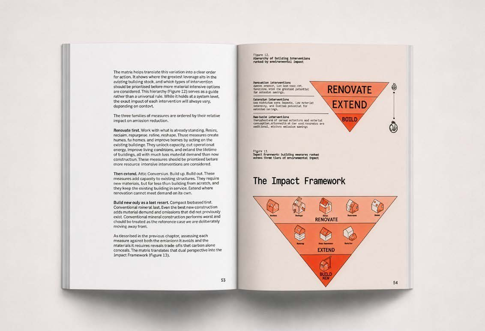

01
The Green Paper / Report
Turn your knowledge into a public agenda.
An agenda-setting publication and the campaign around it — the narrative, the visuals, the launch, the press strategy, the political framing.
For foundations, NGOs, industry organisations, companies and research institutions.